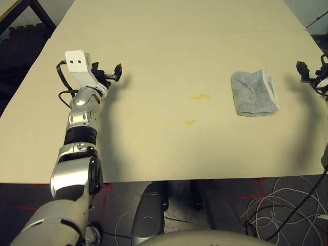
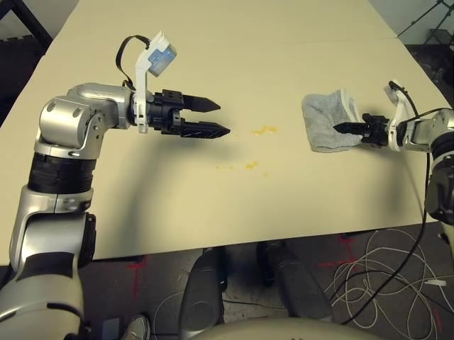
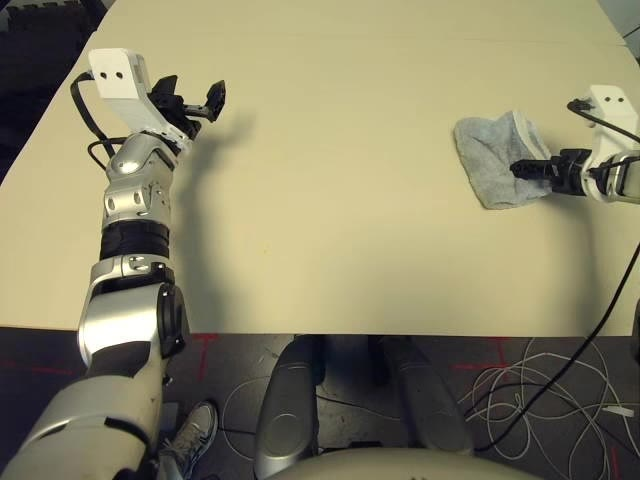
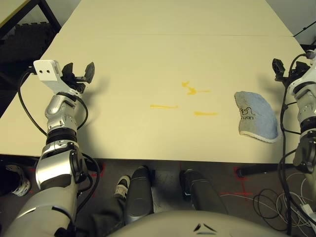
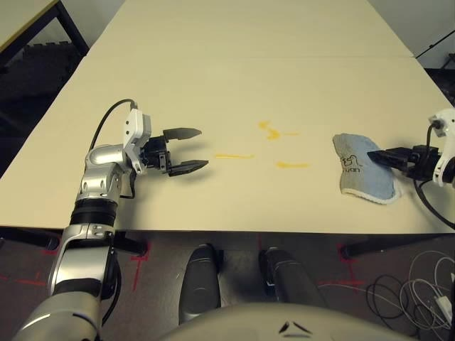
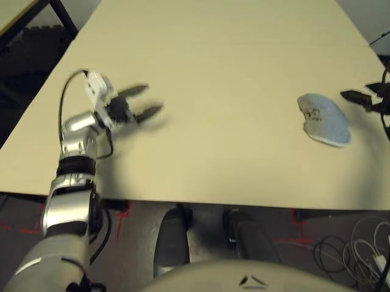
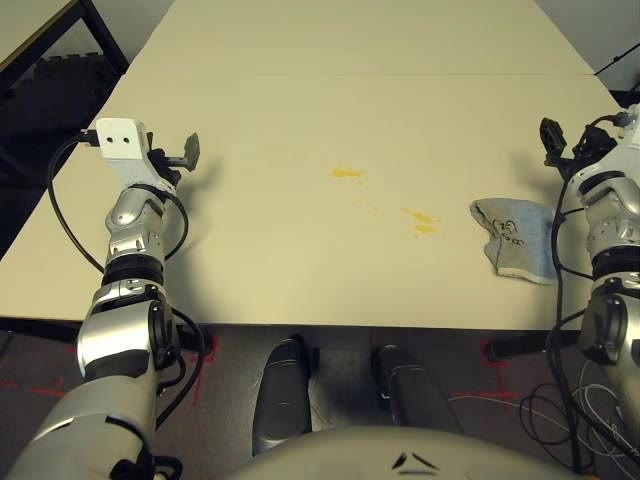
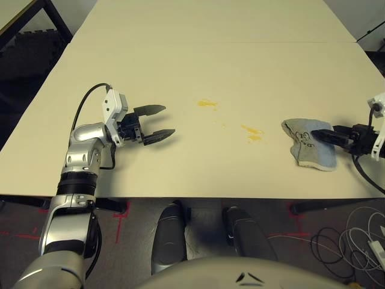
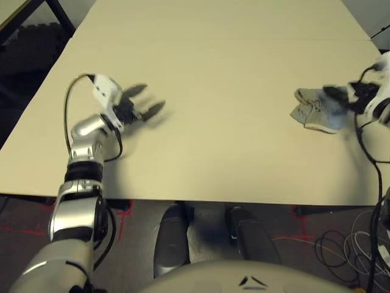

真机人形双臂 · Apple Vision Pro 遥操作 · 抹布擦除桌面水渍 · LeRobot v2.1
该数据集由宇树（Unitree）以 LeRobot 格式公开发布，任务指令为：用抹布擦掉桌面上的水（Wipe the water off the table with a rag）。相对仿真 / 固定臂擦拭集，它提供的是真实 G1 人形双臂在实验室桌面上的接触式擦拭轨迹，适合作为真机分布参考或人形策略微调的起点。
meta/episodes.jsonl 统计，帧数约 297–506（约 9.9–16.9 秒，中位约 12.6 秒）。以元数据为准更可靠。另选 3 条不同时长 / 场景的 episode，便于对比跨 session 差异。主报告样例仍使用 Episode 0。









官方提醒：空间位置难以精确文字描述，复现时应按 AVP 文档安装硬件后，将场景尽量对齐数据集首帧；训练时需考虑跨 session 的场景差异。
| 指标 | 数值 | 说明 |
|---|---|---|
| Episodes | 200 | split train: 0:200 |
| 总帧数 | 75,909 | 约 42 分钟有效轨迹（按 30 Hz） |
| 视频文件 | 800 | 4 相机 × 200 episode |
| 采样频率 | 30 Hz | 状态 / 动作 / 视频对齐 |
| 单条帧数 | 297 – 506 | 均值 379.5 · 中位 377 |
| 单条时长 | 约 9.9 – 16.9 s | 均值约 12.7 s |
| 任务数 | 1 | 仅桌面抹布擦水 |
| 格式版本 | LeRobot v2.1 | Parquet + MP4 |
| 许可证 | Apache-2.0 | 可商用，需保留声明 |
观测与动作成对给出；视觉为独立视频流，状态/动作在 parquet 中按帧索引对齐。
| 类别 | 字段 | 维度 / 说明 |
|---|---|---|
| 视觉 | observation.images.cam_left_high | 480×640×3 · 头左 |
observation.images.cam_right_high | 480×640×3 · 头右 | |
observation.images.cam_left_wrist | 480×640×3 · 左腕 | |
observation.images.cam_right_wrist | 480×640×3 · 右腕 | |
| 观测状态 | observation.left_arm / right_arm | 各 7 · 肩–腕关节角 |
observation.left_gripper / right_gripper | 各 1 · 夹爪 | |
observation.left_ee / right_ee | 各 6 · 末端位姿 | |
observation.body | 29 · 含下肢、腰与双臂 | |
| — | 无公开 F/T 力/力矩通道 | |
| 动作 | action.left_arm / right_arm | 各 7 |
action.left_gripper / right_gripper | 各 1 | |
action.left_ee / right_ee | 各 6 | |
action.body | 7 · 机身速度 / 姿态 / 高度等 |
相对 ForceFlow 等力感知擦拭集，本集优势在人形真机双臂 + 多视角；短板是缺少力传感与清洁度标注（无 dirty_fraction / mask）。
G1_Dex1_Wipe_Table/
├── meta/
│ ├── info.json
│ ├── tasks.jsonl # "Wipe the water off the table with a rag."
│ └── episodes.jsonl # 每条 length
├── data/chunk-000/
│ └── episode_XXXXXX.parquet
└── videos/chunk-000/
├── observation.images.cam_left_high/
├── observation.images.cam_right_high/
├── observation.images.cam_left_wrist/
└── observation.images.cam_right_wrist/
└── episode_XXXXXX.mp4
Hugging Face 上可直接用 LeRobot 加载：
from lerobot.datasets.lerobot_dataset import LeRobotDataset
ds = LeRobotDataset("unitreerobotics/G1_Dex1_Wipe_Table")
print(ds.num_episodes, ds.fps, list(ds.features.keys())[:8])
observation.body / action.body 中与任务无关的维度。Hugging Face 数据集 → AVP 遥操作文档 → UnifoLM-VLA 主页 → LeRobot → 返回报告 · 样例区 →